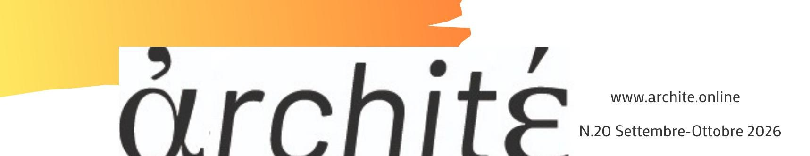
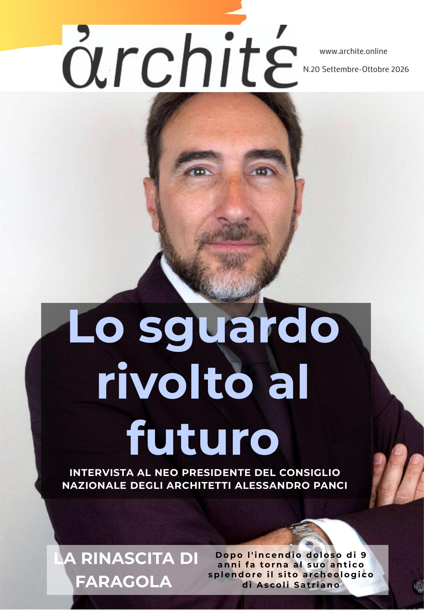
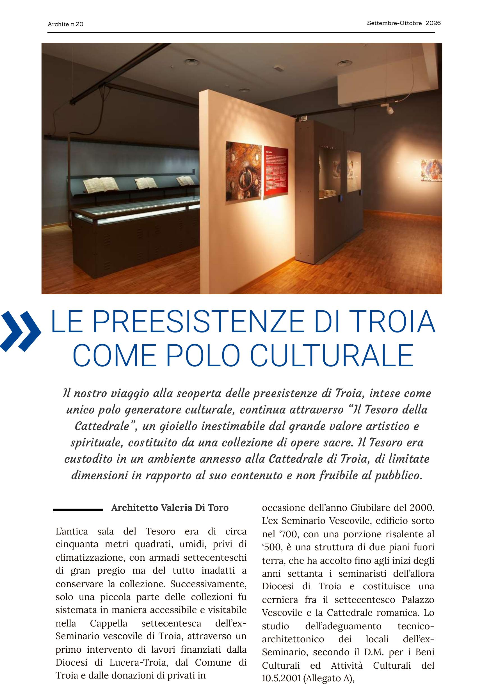

Troia / il Museo del Tesoro
Archité n.20 (settembre-ottobre 2026) pubblica l'articolo di Valeria Di Toro sul Museo del Tesoro della Cattedrale di Troia: il progetto di allestimento e restauro firmato dallo studio Cibelli / Guadagno architetti. Una collezione di opere sacre tra le più preziose della Puglia, accessibile al pubblico.

Il Tesoro della Cattedrale era conservato in un ambiente di circa cinquanta metri quadrati, umido e senza controllo climatico. Il progetto — firmato da Cibelli / Guadagno per il programma ACRI "Sviluppo Sud" in collaborazione con l'ing. G. Tricarico — ha trasformato l'ex Seminario Vescovile settecentesco in un museo a tutti gli effetti.
la collezione / il progetto
Le sale ospitano una raccolta eccezionale: argenti napoletani dei secoli XVII e XVIII, un avorio del XII secolo del vescovo normanno Guglielmo II, paramenti in oro e argento ricamato e tre rotoli dell'Exultet — manufatti liturgici rarissimi, tra i pochi esemplari conservati in Italia. La Sala Eucarestia, la Sala Exultet e la Sala Paramenti accolgono il percorso museale con vetrine a norma DM Beni Culturali 2001, controllo igrometrico passivo e illuminazione a fibre ottiche.
Il progetto integra il Museo del Tesoro nella rete culturale della città: Cattedrale, Museo del Tesoro, MED, Museo Civico — un sistema diffuso che fa di Troia un polo di riferimento per il patrimonio storico e artistico della Puglia settentrionale.
Tre rotoli dell'Exultet in una piccola città di Puglia: manufatti liturgici rarissimi, tra i pochi ancora conservati in Italia.

